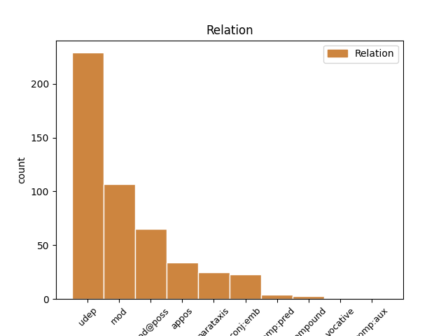
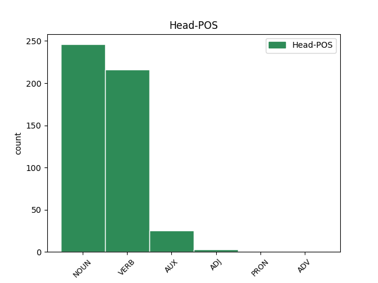
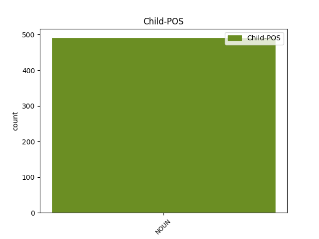

Distribution of features within this leaf



Agreement Rules sorted by frequency.
- When the dependent token is the underspecified dependency(udep) of the head token, and the head token is VERB and the dependent token is NOUN.
1 Эхэ _ _ _ _ 0 _ _ _
2 газарай _ _ _ _ 0 _ _ _
3 Шэнэ _ _ _ _ 0 _ _ _
4 Шотланд _ _ _ _ 0 _ _ _
5 1713 _ _ _ _ 0 _ _ _
6 оной _ _ _ _ 0 _ _ _
7 Утрехтын _ _ _ _ 0 _ _ _
8 хэрээгээр _ _ _ _ 0 _ _ _
9 Британиин _ _ _ _ 0 _ _ _
10 захиргаанда _ _ _ _ 0 _ _ _
11 шэлжэһэн _ _ _ _ 0 _ _ _
12 ; _ _ _ _ 0 _ _ _
13 Долоон _ _ _ _ 0 _ _ _
14 жэлэй _ _ _ _ 0 _ _ _
15 дайнай _ _ _ _ 0 _ _ _
16 дараа _ _ _ _ 0 _ _ _
17 1763 _ _ _ _ 0 _ _ _
18 оной _ _ _ _ 0 _ _ _
19 Парисай _ _ _ _ 0 _ _ _
20 хэрээгээр хэрээг NOUN _ Animacy=Nhum|Case=Ins|Definite=Ind|Number=Sing 29 udep _ _
21 Канада _ _ _ _ 0 _ _ _
22 болон _ _ _ _ 0 _ _ _
23 Шэнэ _ _ _ _ 0 _ _ _
24 Франциин _ _ _ _ 0 _ _ _
25 ехэнхи _ _ _ _ 0 _ _ _
26 хэһэгые _ _ _ _ 0 _ _ _
27 Британида _ _ _ _ 0 _ _ _
28 табижа _ _ _ _ 0 _ _ _
29 үгэбэ үгэ VERB _ Mood=Ind|Number=Sing|Person=3|Tense=Aor|VerbForm=Fin 0 _ _ _
30 . _ _ _ _ 0 _ _ _
1 Я _ _ _ _ 0 _ _ _
2 не _ _ _ _ 0 _ _ _
3 дышу _ _ _ _ 0 _ _ _
4 , _ _ _ _ 0 _ _ _
5 а _ _ _ _ 0 _ _ _
6 пью _ _ _ _ 0 _ _ _
7 благоуханье благоуханье NOUN _ Animacy=Inan|Case=Acc|Gender=Neut|Number=Sing 0 _ _ _
8 Моей _ _ _ _ 0 _ _ _
9 земли земля NOUN _ Animacy=Inan|Case=Gen|Gender=Fem|Number=Sing 7 mod _ _
10 равнинной _ _ _ _ 0 _ _ _
11 и _ _ _ _ 0 _ _ _
12 лесной _ _ _ _ 0 _ _ _
13 . _ _ _ _ 0 _ _ _
1 Эсэстэнь _ _ _ _ 0 _ _ _
2 Юрэнхы _ _ _ _ 0 _ _ _
3 сайд _ _ _ _ 0 _ _ _
4 Трудогоор _ _ _ _ 0 _ _ _
5 ударидуулһан _ _ _ _ 0 _ _ _
6 үндэһэн _ _ _ _ 0 _ _ _
7 хуулиин хуули NOUN _ Case=Gen|Number=Plur 8 mod@poss _ _
8 хуралнууд хуралн NOUN _ Case=Nom|Number=Plur 0 _ _ _
9 боложо _ _ _ _ 0 _ _ _
10 , _ _ _ _ 0 _ _ _
11 эдэнэй _ _ _ _ 0 _ _ _
12 үрэ _ _ _ _ 0 _ _ _
13 дүндэ _ _ _ _ 0 _ _ _
14 үндэһэн _ _ _ _ 0 _ _ _
15 хууляа _ _ _ _ 0 _ _ _
16 Британиһаа _ _ _ _ 0 _ _ _
17 тусгаарлан _ _ _ _ 0 _ _ _
18 1982 _ _ _ _ 0 _ _ _
19 оной _ _ _ _ 0 _ _ _
20 Үндэһэн _ _ _ _ 0 _ _ _
21 хуулиин _ _ _ _ 0 _ _ _
22 актда _ _ _ _ 0 _ _ _
23 хуби _ _ _ _ 0 _ _ _
24 хүнэй _ _ _ _ 0 _ _ _
25 эрхэ _ _ _ _ 0 _ _ _
26 дээрэ _ _ _ _ 0 _ _ _
27 тулгуурилһан _ _ _ _ 0 _ _ _
28 Канадын _ _ _ _ 0 _ _ _
29 эрхэ _ _ _ _ 0 _ _ _
30 сүлөөнэй _ _ _ _ 0 _ _ _
31 хартиие _ _ _ _ 0 _ _ _
32 гаргаһан _ _ _ _ 0 _ _ _
33 ажа _ _ _ _ 0 _ _ _
34 һэн _ _ _ _ 0 _ _ _
35 . _ _ _ _ 0 _ _ _
1 Эдэгээр _ _ _ _ 0 _ _ _
2 тэнгисүүд тэнгисүүд NOUN _ Case=Nom|Number=Plur 0 _ _ _
3 ( _ _ _ _ 0 _ _ _
4 уһанууд уһан NOUN _ Case=Nom|Number=Plur 2 appos _ _
5 ) _ _ _ _ 0 _ _ _
6 Ази _ _ _ _ 0 _ _ _
7 болон _ _ _ _ 0 _ _ _
8 Европо _ _ _ _ 0 _ _ _
9 тибиин _ _ _ _ 0 _ _ _
10 хилэ _ _ _ _ 0 _ _ _
11 юм _ _ _ _ 0 _ _ _
12 . _ _ _ _ 0 _ _ _
1 Цырен _ _ _ _ 0 _ _ _
2 Галанов _ _ _ _ 0 _ _ _
3 1958 _ _ _ _ 0 _ _ _
4 ондо _ _ _ _ 0 _ _ _
5 Москвагай _ _ _ _ 0 _ _ _
6 М. _ _ _ _ 0 _ _ _
7 Горькиин _ _ _ _ 0 _ _ _
8 нэрэмжэтэ _ _ _ _ 0 _ _ _
9 Литературна _ _ _ _ 0 _ _ _
10 институт _ _ _ _ 0 _ _ _
11 амжалтатайгаар _ _ _ _ 0 _ _ _
12 дүүргээд _ _ _ _ 0 _ _ _
13 , _ _ _ _ 0 _ _ _
14 Уласайгаа _ _ _ _ 0 _ _ _
15 радиодо _ _ _ _ 0 _ _ _
16 олон _ _ _ _ 0 _ _ _
17 жэлэй _ _ _ _ 0 _ _ _
18 туршада _ _ _ _ 0 _ _ _
19 редактораар редактора NOUN _ Animacy=Anim|Case=Ins|Gender=Masc|Number=Sing 0 _ _ _
20 , _ _ _ _ 0 _ _ _
21 Буряадай _ _ _ _ 0 _ _ _
22 Уран _ _ _ _ 0 _ _ _
23 зохёолшодой _ _ _ _ 0 _ _ _
24 холбоондо _ _ _ _ 0 _ _ _
25 литературна _ _ _ _ 0 _ _ _
26 консультантаар консультанта NOUN _ Animacy=Hum|Case=Nom|Definite=Ind|Number=Sing 19 conj:emb _ _
27 , _ _ _ _ 0 _ _ _
28 түрүүлэгшын _ _ _ _ 0 _ _ _
29 орлогшоор _ _ _ _ 0 _ _ _
30 хүдэлһэн _ _ _ _ 0 _ _ _
31 байна _ _ _ _ 0 _ _ _
32 . _ _ _ _ 0 _ _ _
1 Хүн _ _ _ _ 0 _ _ _
2 зоной _ _ _ _ 0 _ _ _
3 үнэмлэхы _ _ _ _ 0 _ _ _
4 олонхи _ _ _ _ 0 _ _ _
5 португалшууд _ _ _ _ 0 _ _ _
6 , _ _ _ _ 0 _ _ _
7 диилэнхи _ _ _ _ 0 _ _ _
8 олонхи _ _ _ _ 0 _ _ _
9 христосой _ _ _ _ 0 _ _ _
10 шажантад шажантад NOUN _ Case=Nom|Number=Plur 0 _ _ _
11 ( _ _ _ _ 0 _ _ _
12 тэрэндэ _ _ _ _ 0 _ _ _
13 дотороо _ _ _ _ 0 _ _ _
14 католигүүд католиг NOUN _ Case=Nom|Number=Plur 10 parataxis _ _
15 ) _ _ _ _ 0 _ _ _
16 юм _ _ _ _ 0 _ _ _
17 . _ _ _ _ 0 _ _ _
1 Эстони _ _ _ _ 0 _ _ _
2 45 _ _ _ _ 0 _ _ _
3 227 _ _ _ _ 0 _ _ _
4 км² _ _ _ _ 0 _ _ _
5 ( _ _ _ _ 0 _ _ _
6 дэлхэйд _ _ _ _ 0 _ _ _
7 132-р _ _ _ _ 0 _ _ _
8 томо _ _ _ _ 0 _ _ _
9 ) _ _ _ _ 0 _ _ _
10 газар _ _ _ _ 0 _ _ _
11 нютагтай _ _ _ _ 0 _ _ _
12 , _ _ _ _ 0 _ _ _
13 2010 _ _ _ _ 0 _ _ _
14 оной _ _ _ _ 0 _ _ _
15 үедэ _ _ _ _ 0 _ _ _
16 1.3 _ _ _ _ 0 _ _ _
17 сая _ _ _ _ 0 _ _ _
18 хүн _ _ _ _ 0 _ _ _
19 зонтой зонт NOUN _ Animacy=Inan|Case=Ins|Gender=Fem|Number=Sing 26 udep _ _
20 ( _ _ _ _ 0 _ _ _
21 дэлхэйдэ _ _ _ _ 0 _ _ _
22 151-р _ _ _ _ 0 _ _ _
23 олон _ _ _ _ 0 _ _ _
24 ) _ _ _ _ 0 _ _ _
25 байһан _ _ _ _ 0 _ _ _
26 юм юм AUX _ Mood=Ind|Number=Sing|Person=3|Tense=Pres|VerbForm=Fin 0 _ _ _
27 . _ _ _ _ 0 _ _ _
1 Хитадта хита NOUN _ Case=Abe|Number=Plur 4 udep _ _
2 10000 _ _ _ _ 0 _ _ _
3 болотор _ _ _ _ 0 _ _ _
4 буряадууд буряадууд NOUN _ Case=Nom|Number=Plur 0 _ _ _
5 ажа _ _ _ _ 0 _ _ _
6 hууна _ _ _ _ 0 _ _ _
7 . _ _ _ _ 0 _ _ _
1 Түүхын _ _ _ _ 0 _ _ _
2 дурасхаалта _ _ _ _ 0 _ _ _
3 зүйлнүүд _ _ _ _ 0 _ _ _
4 тухай _ _ _ _ 0 _ _ _
5 Буряад _ _ _ _ 0 _ _ _
6 Уласай _ _ _ _ 0 _ _ _
7 баялигуудта _ _ _ _ 0 _ _ _
8 хабаатай _ _ _ _ 0 _ _ _
9 Байгалай _ _ _ _ 0 _ _ _
10 урда _ _ _ _ 0 _ _ _
11 талын _ _ _ _ 0 _ _ _
12 эртэ _ _ _ _ 0 _ _ _
13 урдын _ _ _ _ 0 _ _ _
14 дурасхаалта _ _ _ _ 0 _ _ _
15 зүйлнүүд зүйлн VERB _ Case=Gen|Number=Plur 0 _ _ _
16 ( _ _ _ _ 0 _ _ _
17 хүшөөнүүд хүшөөн NOUN _ Case=Nom|Number=Plur 15 parataxis _ _
18 ) _ _ _ _ 0 _ _ _
19 тухай _ _ _ _ 0 _ _ _
20 үсөөхэн _ _ _ _ 0 _ _ _
21 тэдыгээр _ _ _ _ 0 _ _ _
22 бэшэхэ _ _ _ _ 0 _ _ _
23 хүсэлэнтэйб _ _ _ _ 0 _ _ _
24 . _ _ _ _ 0 _ _ _
1 Польштойрог _ _ _ _ 0 _ _ _
2 , _ _ _ _ 0 _ _ _
3 Польш _ _ _ _ 0 _ _ _
4 улас _ _ _ _ 0 _ _ _
5 . _ _ _ _ 0 _ _ _
6 Polandball _ _ _ _ 0 _ _ _
7 буюу _ _ _ _ 0 _ _ _
8 Польштойрог _ _ _ _ 0 _ _ _
9 , _ _ _ _ 0 _ _ _
10 Уластойрог _ _ _ _ 0 _ _ _
11 - _ _ _ _ 0 _ _ _
12 интэрнэт интэрнэт NOUN _ Animacy=Inan|Case=Nom|Gender=Masc|Number=Sing 14 compound _ _
13 - _ _ _ _ 0 _ _ _
14 мем мем NOUN _ Animacy=Inan|Case=Nom|Gender=Masc|Number=Sing 0 _ _ _
15 , _ _ _ _ 0 _ _ _
16 байгуулха _ _ _ _ 0 _ _ _
17 ярмаанынь _ _ _ _ 0 _ _ _
18 сайт _ _ _ _ 0 _ _ _
19 Krautchan.net _ _ _ _ 0 _ _ _
20 хабаадаhан _ _ _ _ 0 _ _ _
21 хун _ _ _ _ 0 _ _ _
22 /INT/ _ _ _ _ 0 _ _ _
23 , _ _ _ _ 0 _ _ _
24 2009 _ _ _ _ 0 _ _ _
25 жэл _ _ _ _ 0 _ _ _
26 . _ _ _ _ 0 _ _ _
1 Post _ _ _ _ 0 _ _ _
2 - _ _ _ _ 0 _ _ _
3 Impressionism _ _ _ _ 0 _ _ _
4 : _ _ _ _ 0 _ _ _
5 From _ _ _ _ 0 _ _ _
6 van _ _ _ _ 0 _ _ _
7 Gogh _ _ _ _ 0 _ _ _
8 to _ _ _ _ 0 _ _ _
9 Gauguin _ _ _ _ 0 _ _ _
10 , _ _ _ _ 0 _ _ _
11 revised _ _ _ _ 0 _ _ _
12 edition _ _ _ _ 0 _ _ _
13 , _ _ _ _ 0 _ _ _
14 Secker _ _ _ _ 0 _ _ _
15 & _ _ _ _ 0 _ _ _
16 Warburg _ _ _ _ 0 _ _ _
17 1978 _ _ _ _ 0 _ _ _
18 , _ _ _ _ 0 _ _ _
19 ISBN _ _ _ _ 0 _ _ _
20 0 _ _ _ _ 0 _ _ _
21 - _ _ _ _ 0 _ _ _
22 436 _ _ _ _ 0 _ _ _
23 - _ _ _ _ 0 _ _ _
24 41151 _ _ _ _ 0 _ _ _
25 - _ _ _ _ 0 _ _ _
26 2 _ _ _ _ 0 _ _ _
27 Түүниин _ _ _ _ 0 _ _ _
28 зарим _ _ _ _ 0 _ _ _
29 зураг _ _ _ _ 0 _ _ _
30 мүнөөдэр _ _ _ _ 0 _ _ _
31 дэлхэйдэ _ _ _ _ 0 _ _ _
32 хамагай _ _ _ _ 0 _ _ _
33 алдартай _ _ _ _ 0 _ _ _
34 , _ _ _ _ 0 _ _ _
35 нэрэтэй _ _ _ _ 0 _ _ _
36 , _ _ _ _ 0 _ _ _
37 үнэтэй _ _ _ _ 0 _ _ _
38 бүтээлүүд бүтээл NOUN _ Case=Nom|Number=Plur 39 comp:pred _ _
39 болоһон боло AUX _ Mood=Ind|Number=Plur|Person=1|Tense=Past|VerbForm=Fin 0 _ _ _
40 . _ _ _ _ 0 _ _ _
1 Газар _ _ _ _ 0 _ _ _
2 нутгийн нутгий+의 NOUN _ Case=Gen|Number=Sing 3 mod@poss _ _
3 хэмжээгээрээ хэмжээ ADV _ Case=Abl|Number=Sing|Person[psor]=3 0 _ _ _
4 Дани _ _ _ _ 0 _ _ _
5 , _ _ _ _ 0 _ _ _
6 Бельги _ _ _ _ 0 _ _ _
7 , _ _ _ _ 0 _ _ _
8 Швейцарь _ _ _ _ 0 _ _ _
9 , _ _ _ _ 0 _ _ _
10 Нидерландаас _ _ _ _ 0 _ _ _
11 том _ _ _ _ 0 _ _ _
12 . _ _ _ _ 0 _ _ _
1 Национал _ _ _ _ 0 _ _ _
2 - _ _ _ _ 0 _ _ _
3 социалис _ _ _ _ 0 _ _ _
4 нам мы PRON _ Case=Dat|Number=Plur|Person=1|PronType=Prs 0 _ _ _
5 ( _ _ _ _ 0 _ _ _
6 нацистууд нацист NOUN _ Case=Nom|Number=Plur 4 appos _ _
7 ) _ _ _ _ 0 _ _ _
8 зургаан _ _ _ _ 0 _ _ _
9 сая _ _ _ _ 0 _ _ _
10 гаруй _ _ _ _ 0 _ _ _
11 еврейнүүдые _ _ _ _ 0 _ _ _
12 усадхаба _ _ _ _ 0 _ _ _
13 . _ _ _ _ 0 _ _ _
1 О _ _ _ _ 0 _ _ _
2 родина _ _ _ _ 0 _ _ _
3 , _ _ _ _ 0 _ _ _
4 ведь _ _ _ _ 0 _ _ _
5 лучшею _ _ _ _ 0 _ _ _
6 подругой подруга NOUN _ Animacy=Anim|Case=Ins|Gender=Fem|Number=Sing 8 comp:pred _ _
7 , _ _ _ _ 0 _ _ _
8 Была быть VERB _ Aspect=Imp|Gender=Fem|Mood=Ind|Number=Sing|Tense=Past|VerbForm=Fin|Voice=Act 0 _ _ _
9 мне _ _ _ _ 0 _ _ _
10 в _ _ _ _ 0 _ _ _
11 раннем _ _ _ _ 0 _ _ _
12 детстве _ _ _ _ 0 _ _ _
13 сарана _ _ _ _ 0 _ _ _
14 . _ _ _ _ 0 _ _ _
1 Таёжная _ _ _ _ 0 _ _ _
2 , _ _ _ _ 0 _ _ _
3 озёрная _ _ _ _ 0 _ _ _
4 , _ _ _ _ 0 _ _ _
5 степная _ _ _ _ 0 _ _ _
6 , _ _ _ _ 0 _ _ _
7 Ты _ _ _ _ 0 _ _ _
8 добрым _ _ _ _ 0 _ _ _
9 светом свет NOUN _ Animacy=Inan|Case=Ins|Gender=Masc|Number=Sing 11 udep _ _
10 солнечным _ _ _ _ 0 _ _ _
11 полна полный ADJ _ Degree=Pos|Gender=Fem|Number=Sing|Variant=Short 0 _ _ _
12 . _ _ _ _ 0 _ _ _
1 Хүн _ _ _ _ 0 _ _ _
2 түрэлхитэнэй _ _ _ _ 0 _ _ _
3 дайн _ _ _ _ 0 _ _ _
4 байлдаанай _ _ _ _ 0 _ _ _
5 түүхэдэ _ _ _ _ 0 _ _ _
6 хоёрхон _ _ _ _ 0 _ _ _
7 удаа _ _ _ _ 0 _ _ _
8 сүмын _ _ _ _ 0 _ _ _
9 зэбсэг _ _ _ _ 0 _ _ _
10 хэрэглэгдэһэн _ _ _ _ 0 _ _ _
11 болоод _ _ _ _ 0 _ _ _
12 тэдэниие _ _ _ _ 0 _ _ _
13 АНУ _ _ _ _ 0 _ _ _
14 Дэлхэйн _ _ _ _ 0 _ _ _
15 хоёрдугаар _ _ _ _ 0 _ _ _
16 дайнай _ _ _ _ 0 _ _ _
17 түгэсхэл _ _ _ _ 0 _ _ _
18 үедэ үе NOUN _ Animacy=Inan|Case=All|Definite=Def|Number=Sing 19 mod _ _
19 хэрэглэһэн хэрэг VERB _ Mood=Ind|Number=Sing|Person=3|Tense=Aor|VerbForm=Fin 0 _ _ _
20 . _ _ _ _ 0 _ _ _
1 Эдэ _ _ _ _ 0 _ _ _
2 колонинуудай _ _ _ _ 0 _ _ _
3 олгоһон _ _ _ _ 0 _ _ _
4 газар _ _ _ _ 0 _ _ _
5 эзэмшэхэ _ _ _ _ 0 _ _ _
6 эрхэ _ _ _ _ 0 _ _ _
7 бүхы _ _ _ _ 0 _ _ _
8 нүүдэллэн _ _ _ _ 0 _ _ _
9 һууришагшадые _ _ _ _ 0 _ _ _
10 Гриин _ _ _ _ 0 _ _ _
11 уулын уул NOUN _ Case=Gen|Number=Plur 12 mod@poss _ _
12 хүбүүд хүб VERB _ Case=Nom|Number=Plur 0 _ _ _
13 гэхэ _ _ _ _ 0 _ _ _
14 һайн _ _ _ _ 0 _ _ _
15 дурын _ _ _ _ 0 _ _ _
16 сэрэгжэһэн _ _ _ _ 0 _ _ _
17 бүлэглэлнүүд _ _ _ _ 0 _ _ _
18 эсэргүүсэжэ _ _ _ _ 0 _ _ _
19 байһан _ _ _ _ 0 _ _ _
20 болон _ _ _ _ 0 _ _ _
21 ябаандаа _ _ _ _ 0 _ _ _
22 тусгаар _ _ _ _ 0 _ _ _
23 Бүгэдэ _ _ _ _ 0 _ _ _
24 Найрамдаха _ _ _ _ 0 _ _ _
25 Вермонт _ _ _ _ 0 _ _ _
26 Уласые _ _ _ _ 0 _ _ _
27 үүсхэбэ _ _ _ _ 0 _ _ _
28 . _ _ _ _ 0 _ _ _
Disagree Examples:
1 1890-ээд _ _ _ _ 0 _ _ _
2 онуудта он NOUN _ Case=Dat|Number=Plur 10 udep _ _
3 Гуанчжоудо _ _ _ _ 0 _ _ _
4 буржуа _ _ _ _ 0 _ _ _
5 - _ _ _ _ 0 _ _ _
6 арадшалаһан _ _ _ _ 0 _ _ _
7 хубисхалта _ _ _ _ 0 _ _ _
8 хүдэлөөн _ _ _ _ 0 _ _ _
9 бии _ _ _ _ 0 _ _ _
10 болобо боло AUX _ Mood=Cnd|Number=Sing|Person=3|VerbForm=Conv 0 _ _ _
11 ; _ _ _ _ 0 _ _ _
12 эндэ _ _ _ _ 0 _ _ _
13 Сунь _ _ _ _ 0 _ _ _
14 Ятсен _ _ _ _ 0 _ _ _
15 өөрынгөө _ _ _ _ 0 _ _ _
16 ажаллалгые _ _ _ _ 0 _ _ _
17 эхилһэн _ _ _ _ 0 _ _ _
18 байна _ _ _ _ 0 _ _ _
19 , _ _ _ _ 0 _ _ _
20 тэрэнэй _ _ _ _ 0 _ _ _
21 Синчжунхой _ _ _ _ 0 _ _ _
22 нэрэтэй _ _ _ _ 0 _ _ _
23 байгуулга _ _ _ _ 0 _ _ _
24 1895 _ _ _ _ 0 _ _ _
25 оной _ _ _ _ 0 _ _ _
26 10 _ _ _ _ 0 _ _ _
27 һарада _ _ _ _ 0 _ _ _
28 зэбсэгтэй _ _ _ _ 0 _ _ _
29 улас _ _ _ _ 0 _ _ _
30 түрын _ _ _ _ 0 _ _ _
31 гаралгые _ _ _ _ 0 _ _ _
32 хэһэн _ _ _ _ 0 _ _ _
33 байгаа _ _ _ _ 0 _ _ _
34 . _ _ _ _ 0 _ _ _
1 1915 _ _ _ _ 0 _ _ _
2 оной _ _ _ _ 0 _ _ _
3 Хиагтын _ _ _ _ 0 _ _ _
4 гэрээгээр _ _ _ _ 0 _ _ _
5 Хаант _ _ _ _ 0 _ _ _
6 Орос _ _ _ _ 0 _ _ _
7 ба _ _ _ _ 0 _ _ _
8 Хитадын _ _ _ _ 0 _ _ _
9 шахалтаар шахалт NOUN _ Case=Nom|Number=Plur 22 udep _ _
10 Монгол _ _ _ _ 0 _ _ _
11 уласые _ _ _ _ 0 _ _ _
12 Хитадын _ _ _ _ 0 _ _ _
13 бүрэлдэхүүн _ _ _ _ 0 _ _ _
14 дэх _ _ _ _ 0 _ _ _
15 автономит _ _ _ _ 0 _ _ _
16 ( _ _ _ _ 0 _ _ _
17 өөртөө _ _ _ _ 0 _ _ _
18 засах _ _ _ _ 0 _ _ _
19 эрхт _ _ _ _ 0 _ _ _
20 ) _ _ _ _ 0 _ _ _
21 улас _ _ _ _ 0 _ _ _
22 болголоо болгол VERB _ Aspect=Perf|Mood=Imp|Number=Sing|Person=2|Tense=Past|VerbForm=Fin|Voice=Act 0 _ _ _
23 . _ _ _ _ 0 _ _ _
24 1919 _ _ _ _ 0 _ _ _
25 ондо _ _ _ _ 0 _ _ _
26 Хитадын _ _ _ _ 0 _ _ _
27 цэргийн _ _ _ _ 0 _ _ _
28 эрхтэн _ _ _ _ 0 _ _ _
29 Ар _ _ _ _ 0 _ _ _
30 Монголой _ _ _ _ 0 _ _ _
31 нийслэл _ _ _ _ 0 _ _ _
32 Өргөөг _ _ _ _ 0 _ _ _
33 эзэлж _ _ _ _ 0 _ _ _
34 , _ _ _ _ 0 _ _ _
35 өөртөө _ _ _ _ 0 _ _ _
36 засах _ _ _ _ 0 _ _ _
37 эрхийг _ _ _ _ 0 _ _ _
38 устгав _ _ _ _ 0 _ _ _
39 . _ _ _ _ 0 _ _ _
1 1954 _ _ _ _ 0 _ _ _
2 - _ _ _ _ 0 _ _ _
3 1965 _ _ _ _ 0 _ _ _
4 онуудта он NOUN _ Case=Loc|Gender=Neut|Number=Plur|Person=3 12 udep _ _
5 Н.Г. _ _ _ _ 0 _ _ _
6 Балдано _ _ _ _ 0 _ _ _
7 Буряадай _ _ _ _ 0 _ _ _
8 Уран _ _ _ _ 0 _ _ _
9 зохёолшодой _ _ _ _ 0 _ _ _
10 холбооной _ _ _ _ 0 _ _ _
11 түрүүлэгшээр _ _ _ _ 0 _ _ _
12 хүдэлөө хүдэл VERB _ Mood=Ind|Number=Sing|Person=3|Tense=Past|VerbForm=Fin 0 _ _ _
13 һэн _ _ _ _ 0 _ _ _
14 . _ _ _ _ 0 _ _ _
1 V _ _ _ _ 0 _ _ _
2 зуунда _ _ _ _ 0 _ _ _
3 байгуулагдаһан _ _ _ _ 0 _ _ _
4 тус _ _ _ _ 0 _ _ _
5 хото _ _ _ _ 0 _ _ _
6 Зүүн _ _ _ _ 0 _ _ _
7 Славян _ _ _ _ 0 _ _ _
8 улас _ _ _ _ 0 _ _ _
9 түрэ _ _ _ _ 0 _ _ _
10 , _ _ _ _ 0 _ _ _
11 соёлой _ _ _ _ 0 _ _ _
12 түб _ _ _ _ 0 _ _ _
13 , _ _ _ _ 0 _ _ _
14 Киевэй _ _ _ _ 0 _ _ _
15 Русиин _ _ _ _ 0 _ _ _
16 ниислэл _ _ _ _ 0 _ _ _
17 болон _ _ _ _ 0 _ _ _
18 хүгжэжэ _ _ _ _ 0 _ _ _
19 байһан _ _ _ _ 0 _ _ _
20 болон _ _ _ _ 0 _ _ _
21 1240 _ _ _ _ 0 _ _ _
22 ондо _ _ _ _ 0 _ _ _
23 монголшуудай _ _ _ _ 0 _ _ _
24 добтолгооной _ _ _ _ 0 _ _ _
25 уламһаа _ _ _ _ 0 _ _ _
26 бүрин _ _ _ _ 0 _ _ _
27 усадхагдаһанаар усадхагдаһ NOUN _ Case=Nom|Number=Plur 29 udep _ _
28 нүлөөгөө _ _ _ _ 0 _ _ _
29 алдаба ал VERB _ Gender=Masc|Number=Sing|VerbForm=Inf|Voice=Act 0 _ _ _
30 . _ _ _ _ 0 _ _ _
1 XIII _ _ _ _ 0 _ _ _
2 — _ _ _ _ 0 _ _ _
3 XIV _ _ _ _ 0 _ _ _
4 зуунай _ _ _ _ 0 _ _ _
5 готикын _ _ _ _ 0 _ _ _
6 церковь _ _ _ _ 0 _ _ _
7 сүмэнүүд _ _ _ _ 0 _ _ _
8 , _ _ _ _ 0 _ _ _
9 XVII _ _ _ _ 0 _ _ _
10 — _ _ _ _ 0 _ _ _
11 XIX _ _ _ _ 0 _ _ _
12 зуунай зуун NOUN _ Animacy=Nhum|Case=Dat|Definite=Def|Number=Sing 17 udep _ _
13 барокко _ _ _ _ 0 _ _ _
14 ба _ _ _ _ 0 _ _ _
15 классицизм _ _ _ _ 0 _ _ _
16 маягай _ _ _ _ 0 _ _ _
17 ансамбльнууд ансамбльн NOUN _ Case=Nom|Number=Plur 0 _ _ _
18 . _ _ _ _ 0 _ _ _